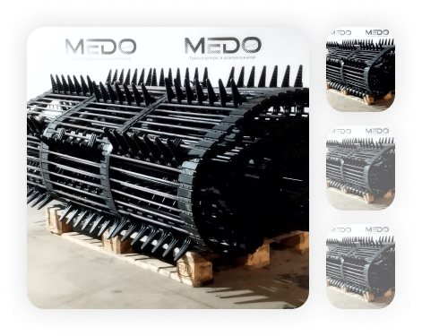

Транспортер выгрузной
Колесные экскаваторы
Экскаваторы-погрузчики
Картофелеуборочная техника
Транспортеры MEDO
Комплектующие MEDO
Почвообрабатывающая техника
Кормоуборочная техника
Опрыскиватели
Разбрасыватели
Зерноуборочная техника
Зерноуборочная техника
Зерноуборочная техника
Зерноуборочная техника
Зерноуборочная техника
Зерноуборочная техника
Зерноуборочная техника
Зерноуборочная техника
Зерноуборочная техника
Каталог >
Свеклоуборочная техника >
Транспортер выгрузной БР 8050 х 1700 х 161
Транспортер выгрузной БР 8050 х 1700 х 161

Основные характеристики:
Артикул 1056025611
Производитель MEDO
Ширина 1700 мм
Кол-во прутков 161 шт.
Поставляем оригинальные запчасти, а также качественные аналоги. Оказываем услуги по Ремонту и восстановлению деталей, узлов и механизмов.
Помогаем специалистам правильно дефектовать технику и подобрать именно те детали, которые действительно необходимы. Оказываем информационную поддержку технических специалистов при работе с каталогами и определением правильных параметров и характеристик деталей.
Проводим консультации для руководителей о правильной эксплуатации техники, а также определении причин аварийных поломок вследствие нарушений правил выполнения работ и технологии.